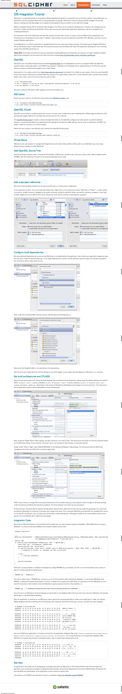

Your browser doesn't support the features required by impress.js, so you are presented with a simplified version of this presentation.
For the best experience please use the latest Chrome, Safari or Firefox browser.
Управление зависимостями в Cocoa-проектах
Установка библиотек
$[sudo] gem install cocoapods pod setup
platform :ios dependency 'AFNetworking', '>= 0.9.1'
$ pod install Example.xcodeproj Updating spec repo `master' Installing AFNetworking (0.9.1) Generating support files [!] From now on use `Example.xcworkspace' instead of `Example.xcodeproj'.
$ tree -L 1
.
├── Example
├── Example.xcodeproj
├── Example.xcworkspace
├── Pods
├── Default.png
├── Default@2x.png
├── Podfile
└── Podfile.lock
Pod::Spec.new do |s|
s.name = 'ParseKit'
s.version = '0.0.2'
s.license = 'Apache'
s.summary = 'Objective-C/Cocoa String Tokenizer and Parser toolkit. Supports Grammars.'
s.homepage = 'http://parsekit.com/'
s.author = { 'Todd Ditchendorf' => 'todd.ditchendorf@gmail.com' }
s.source = { :svn => 'http://parsekit.googlecode.com/svn/trunk/', :revision => '74'}
s.description = "ParseKit is a Mac OS X Framework written by Todd Ditchendorf"
s.source_files = 'include/**/*.{h,m}', 'src/**/*.{h,m}'
s.clean_paths = "debugapp", "demoapp", "docs", "frameworks", "jsdemoapp", "jssrc", "res", "test", "*.xcodeproj"
if config.ios?
s.frameworks = 'Foundation', 'CoreGraphics'
else
s.framework = 'Foundation'
end
s.library = 'icucore'
s.requires_arc = false
end
$ pod search json
==> JSONKit (1.4, 1.5pre)
A Very High Performance Objective-C JSON Library.
==> SBJson (2.2.3, 3.0.4, 3.1)
This library implements strict JSON parsing and generation in Objective-C.
==> TouchJSON (1.0)
TouchJSON is an Objective-C based parser and generator for JSON encoded data.
#libPods-debug.a
target :debug do
dependency 'CocoaLumberjack'
end
#libPods-test.a
target :test, :exclusive => true do
dependency 'Kiwi'
end
dependency 'JSONKit', :podspec => 'https://mysite.com/specs/JSONKit.podspec'
dependency 'AFNetworking',
:git => 'https://github.com/gowalla/AFNetworking.git',
:commit => '082f8319af'
dependency do |spec| #inline spec
spec.name = 'JSONKit'
spec.version = '1.4'
spec.source = {
:git => 'https://github.com/johnezang/JSONKit.git',
:tag => 'v1.4'
}
spec.source_files = 'JSONKit.*'
end
Use a spacebar or arrow keys to navigate